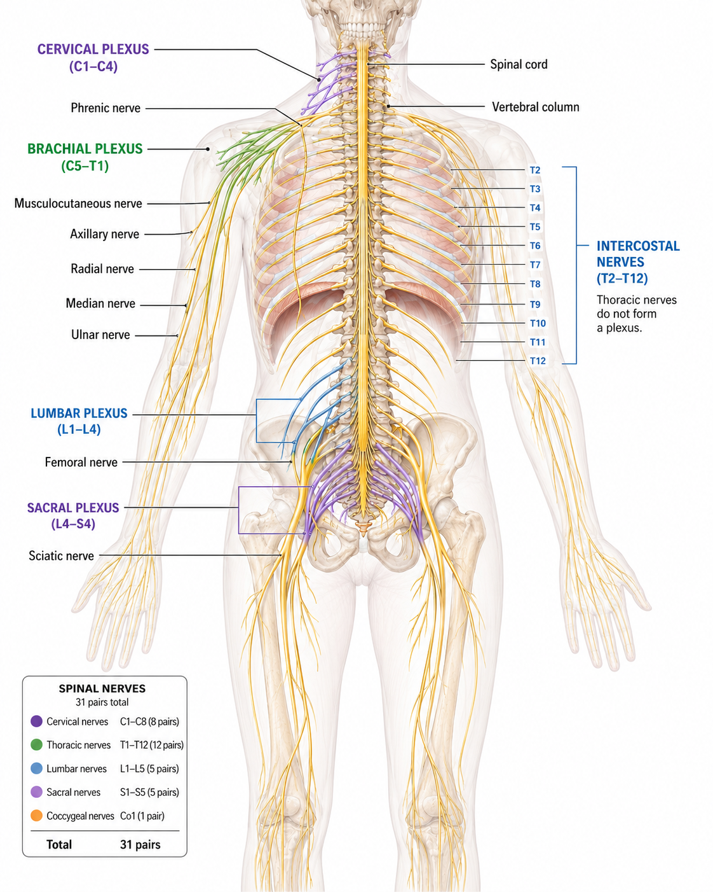
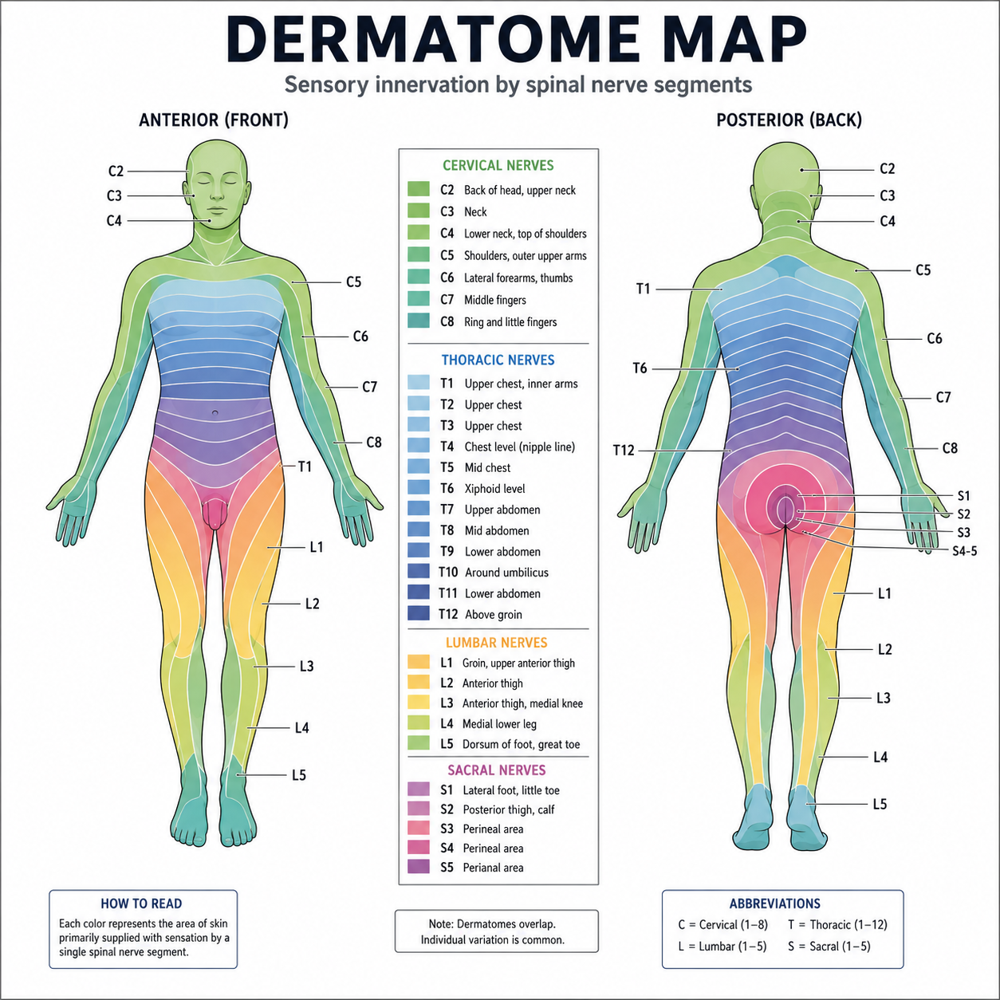

The 31 Pairs — Grouped by Region
Click a Spinal Cord Region
Cervical Nerves (C1–C8)
The 8 pairs of cervical spinal nerves. (Note: 8 cervical nerves but only 7 cervical vertebrae.) They supply the neck and shoulders and, via the brachial plexus, the arms; C1–C4 form the cervical plexus.
Cervical
8
C1–C8
Thoracic
12
T1–T12
Lumbar
5
L1–L5
Sacral
5
S1–S5
Coccygeal
1
Co
Count check: 8 + 12 + 5 + 5 + 1 = 31 pairs. Every spinal nerve is mixed (it carries both a sensory dorsal root and a motor ventral root), and each is named for the cord region it arises from.
From Roots to Rami (Branches)
How a Spinal Nerve Forms & Branches — Click Each
Formation of the Spinal Nerve
A dorsal (sensory) root and a ventral (motor) root fuse to form a short, mixed spinal nerve, which then passes through the intervertebral foramen before branching.
Don't confuse them: Roots (dorsal + ventral) form the spinal nerve before it emerges. Rami (dorsal, ventral, communicans) are the branches after it emerges. The big ventral rami are the ones that weave into the nerve plexuses.
Nerve Plexuses — Networks of Ventral Rami
The Major Plexuses — Click Each
Cervical Plexus (C1–C4)
Formed by the ventral rami of the first four cervical nerves. Supplies the neck and skin muscles and — via the phrenic nerve — the diaphragm for breathing.
Reference — Spinal Nerve Plexuses

A plexus is a network of ventral rami. Because each output branch pools fibers from several spinal nerves, damage to one spinal segment cannot fully paralyze a limb muscle.
Dermatomes — Mapping the Skin
One Spinal Nerve, One Skin Region — Click to Explore
What Is a Dermatome?
A dermatome is the area of skin whose sensory input is carried by a single spinal nerve. Adjacent dermatomes overlap somewhat, and together they map the whole body surface.
Reference — Dermatome Map

Each labeled band is the skin territory of one spinal nerve. Clinicians use this map to localize nerve or spinal-cord problems from where sensation is altered.